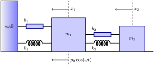

In 1963, an MIT professor, Edward N. Lorenz, published a paper on his research in meteorology. Using differential equations, Lorenz had developed a simplified system to model certain weather-related phenomena. When he analyzed the system, however, he found that the trajectories of the solutions were incredibly convoluted and effectively unpredictable for certain parameters. The Lorenz equations can be written as
\begin{align*}
\frac{dx}{dt} & = -\sigma x + \sigma y\\
\frac{dy}{dt} & = \rho x - y - xz\\
\frac{dz}{dt} & = -\beta z + xy,
\end{align*}
where \(\sigma\text{,}\)\(\rho\text{,}\) and \(\beta\) are constants. The Existence and Uniqueness Theorem for systems of differential equations guarantees a unique solution for each set of initial conditions,
However, Lorenz discovered that the trajectories of the solutions were incredibly convoluted and effectively unpredictable for certain parameters. For certain values of \(\sigma\text{,}\)\(\rho\text{,}\) and \(\beta\text{,}\) the trajectories are extremely sensitive to initial conditions. Since real data always has some inherent uncertainty, initial values are never precisely known, and we may have little success modeling real world phenomena. In addition, solutions can stay in a bounded region of the three dimensional version of the phase plane and wind through the region along an incredibly convoluted path. There is much more freedom to move around in three dimensions than there is in two.
(a)
Lorenz noticed that the system behaved strangely, when he let \(\sigma =10\text{,}\)\(\rho = 28\text{,}\) and \(\beta = 8/3\text{.}\) Thus, our system
\begin{align*}
\frac{dx}{dt} & = -10 x + 10 y\\
\frac{dy}{dt} & = 28 x - y - xz\\
\frac{dz}{dt} & = -\frac{8}{3} z + xy,
\end{align*}
defines a vector field in \({\mathbb R}^3\text{,}\)
\begin{equation*}
{\mathbf F}(x, y, z)
=
\left(
-10 x + 10 y,
28 x - y - xz,
-\frac{8}{3} z + xy
\right),
\end{equation*}
and the equilibrium solutions occur exactly when this vector field is zero. That is, \((x,y,z)\) is an equilibrium solution if
\begin{equation*}
{\mathbf F}(x, y, z)
=
\left(
-10 x + 10 y,
28 x - y - xz,
-\frac{8}{3} z + xy
\right)
=
(0, 0, 0).
\end{equation*}
Find all of the equilibrium solutions for this system.
(b)
If we wish to understand the nature of the equilibrium solutions of the Lorenz system, it makes sense to linearize the system. Compute the Jacobian matrix of the system and determine the nature of each of the equilibrium solutions that you found in Task 5.5.1.a.
Use part Task 5.5.1.c.iii to show that \(\dot{V} \leq -2abr^2 \lt 0\) everywhere outside of the ellipsoid
\begin{equation*}
R = \left\{ (x, y, z) | V(x, y, z) \leq 3br^2/m \}\right\}.
\end{equation*}
(v)
Use part Task 5.5.1.c.iv to show that the ellipsoid is invariant, and that every solution curve ends up inside of \(R\text{.}\)
Project5.5.2.Project—Tuned-Mass Dampers.
The 60-story, 790-foot mirror-glass John Hancock Tower, New England's tallest building, was completed in 1976 and was designed by Henry N. Cobb, who founded the firm Pei Cobb Freed & Partners with famed architect I.M. Pei. (Figure 5.5.1). 1  The building suffered many problems during construction, the most notorious of which was how the original glass windows were attached. In early 1972 when construction was still underway, one of the 500-pound windows popped out of the building and committed suicide on the sidewalk below. In all, more than 100 of the building's windows suffered the same fate. Fortunately, no one was injured. Initially, the architects and engineers thought that the problem was caused by the building's tendancy to sway excessively in high winds. However, they later determined that the falling-window problem was caused by the air space between the double-paned windows and pressure differentials between the interior and exterior of the building. The problem was solved by replacing all of the windows with single sheets of fully tempered glass. During the repairs, the windows were replaced with plywood, and the building was nicknamed the “Plywood Palace.”
Figure5.5.1.The John Hancock Tower
Another flaw in the design of the building resulted in an extreme amount of swaying. In fact, office workers in the upper stories of the building complained of motion sickness. The building actually twisted as it was swaying back and forth. Engineers determined that the building's natural sway period was dangerously close to the period of its torsion. To remedy the problem, the engineers installed a pair of tuned mass dampers on the 58th floor of the building to absorb the energy created by the swaying. This is the floor of concrete that you see near the top of the structure (Figure 5.5.1). In addition, 1,500 tons of steel braces were installed to keep the building from falling over in a high wind. 2 
(a)
To construct a simple model of a tuned-mass damper, we will consider a mass, \(m_1\text{,}\) connected to a fixed wall with a spring and a dashpot. To this first mass, we attach a second mass, \(m_2\text{,}\) by using a spring and a dashpot (see Figure 5.5.2). Here the oscillator to be damped has mass \(m_1\) with spring or restoring constant \(k_1\) and resistance or damping constant \(b_1\text{.}\) This could be a large structure, where \(k_1\) would be its stiffness while \(b_1\) would reflect internal frictional resistance to motion proportional to the velocity of the structure. The damping oscillator would be a large mass which sits atop the structure and is permitted to slide or roll as the structure sways in response to wind or seismic forces. This damper has mass \(m_2\) with spring or restoring constant \(k_2\) and resistance or damping constant \(b_2\text{.}\)

Figure5.5.2.Diagram of a tuned mass damper
Using Newton’s Second Law, which says that the mass times the acceleration of that mass is equal to the sum of all external forces acting on the mass show that the governing equations for the motions of the structure and the damper are given by
In our study here we will first presume an “ideal” structure with no resistance or damping coefficient; i.e., \(b_1 = 0\text{,}\) and the same for the damper; i.e., \(b_2 = 0\text{.}\) As we can see there is a driving force applied to the structure of \(f(t) = \rho_0 \cos(\omega t)\text{.}\) Our interest will be in seeing if we can tune the added mass damper to reduce or eliminate the possibility of resonance when the initial structure is driven by a force with a frequency equal to that of the natural frequency of the initial mass system.
show that the system (5.5.1)–(5.5.2) can be written as a system of four first-order linear equations.
(b)
(i)
Determine the system of four first-order linear equations from Task 5.5.2.a when there is no damping; i.e., \(b_1 = 0\) and \(b_2 = 0\text{.}\)
(ii)
Now use \(m_1 =10\) and \(k_1 =90\) with \(x_i(0)=0\text{,}\)\(x'_i(0)=0\text{,}\)\(p_i(0)=0\text{,}\) and \(p'_i(0)=0\) for \(i = 1, 2\text{,}\) while \(f(t)= 10\cos(3t)\) and set \(m_2 = 1\) with \(k_2 = 0\text{;}\) i.e., withdraw the second mass system. Explain the physical significance and impact results of the numbers \(10\text{,}\)\(90\text{,}\) and \(3\) in the above sentence in terms of the motion of the initial oscillator. Solve this system for the motion of mass \(m_1\) over a time interval of \(20\) units and plot the displacement of that mass, \(x_1(t)\text{,}\) over that time interval. Explain what you see.
(iii)
In the system that you found in Task 5.5.2.b.i, use the values of \(m_1 =10\) and \(k_1 = 90\) with with \(x_i(0)=0\text{,}\)\(x'_i(0)=0\text{,}\)\(p_i(0)=0\text{,}\) and \(p'_i(0)=0\) for \(i = 1, 2\) and \(f(t)=10\cos(3t)\) and set \(m_2 =1\) with varying values of \(k_2\text{.}\) Keep \(b_1 =0\) and \(b_2 =0\text{.}\) What do you observe in the maximum amplitude of the initial mass \(m_1\) as one changes \(k_2\text{?}\) Defend your observation with data or plot.
(iv)
From Task 5.5.2.b.iii what is the “best” value of \(k_2\text{?}\) Be sure you define the word “best.”
(v)
For the best value of \(k_2\) determine the maximum amplitude displacement for mass \(m_1\text{,}\)\(x_1(t)\) over a range of frequencies.
(c)
We consider another, comparable configuration as Task 5.5.2.b for practice. Notice that mass \(m_2\) is only 1% of mass \(m_1\text{,}\) which is quite realistic in structural design when using tuned mass dampers.
(i)
In the system that you found in Task 5.5.2.b.i, use \(m_1 =10\) and \(k_1 =90\) with \(x_i(0)=0\text{,}\)\(x'_i(0)=0\text{,}\)\(p_i(0)=0\text{,}\) and \(p'_i(0)=0\) for \(i = 1, 2\text{,}\) while \(f(t)= 10 \cos(3t)\) and set \(m_2 = 0.1\) with \(k_2 = 0\text{;}\) i.e., withdraw the second mass system. Explain the physical significance and impact results of the numbers \(10\text{,}\)\(90\text{,}\) and \(3\) in the above sentence in terms of the motion of the initial oscillator. Solve this system for the motion of mass \(m_1\) over a time interval of \(20\) units and plot the displacement of that mass, \(x_1(t)\text{,}\) over that time interval. Explain what you see.
(ii)
In (5.5.1)–(5.5.2) use the values of \(m_1 =10\) and \(k_1 =90\) with \(x_i(0)=0\text{,}\)\(x'_i(0)=0\text{,}\)\(p_i(0)=0\text{,}\) and \(p'_i(0)=0\) for \(i = 1, 2\text{,}\) and \(f(t)=5\cos(3t)\) and set \(m_2 = 0.1\) with varying values of \(k_2\text{.}\) Keep \(b_1 = 0\) and \(b_2 = 0\text{.}\) What do you observe in the maximum amplitude of the initial mass as one changes \(k_2\text{?}\) Defend your observation with data or plot.
(iii)
From Task 5.5.2.c.ii what is the “best” value of \(k_2\text{?}\) Be sure you define the word “best.”
(iv)
For the best value of \(k_2\) determine the maximum amplitude displacement for mass \(m_1\text{,}\)\(x_1(t)\) over a range of frequencies.
(d)
From the introductory material for this scenario offered above and the analysis in Task 5.5.2.b and Task 5.5.2.c offer a description of how to build a tuned mass damper to stop the resonance phenomena in the case of (5.5.1)–(5.5.2), where there is no damping; i.e., \(b_1 = 0\) and \(b_2 = 0\text{.}\)
(e)
Now let us consider a different approach. If we let
If we consider the kinetic and potential energy of both masses and springs and ignore damping and the term \(\rho_0 \cos(\omega t)\text{,}\) explain we can derive the Hamiltonian function
\begin{equation}
\frac{dH}{dt} = - b \left( \frac{p_2}{m_2} - \frac{p_1}{m_1} \right)^2 = - b \left( \frac{dx_2}{dt} - \frac{dx_1}{dt} \right)^2.\tag{5.5.3}
\end{equation}
(iii)
Equation (5.5.3) tells us that \(dH/dt \leq 0\text{.}\) Moreover, \(dH/dt \lt 0\) whenever the distance between the two masses is changing. Thus, energy decreases whenever the second mass is moving relative to the first. Thus, if the wind or an earthquake starts our building (\(m_1\)) swaying back and forth, then the tuned mass-damper (\(m_2\)) located on one of the top floors of the building will start to move relative to the building and energy will be removed from the system by the dampers.
(iv)
Of course, \(m_1\) and \(k_1\) involve the building and are set by the architects and engineers. We, however, are free to choose \(m_2\text{,}\)\(k_2\) and \(b\text{.}\) We want to choose \(b\) fairly large so that there is a rapid loss of energy; i.e., the magnitude of \(dH/dt\) is large. We should choose \(m_2\) large enough so that this mass oscillates with respect to \(m_1\text{.}\) If we choose \(m_2\) two small, then the strong damper will almost serve as a rigid connection between \(m_1\) and \(m_2\text{.}\) Therefore, we wish to choose \(m_2\) to be large so that we guaranteed that this mass will oscillate with respect to \(m_1\text{.}\) We should, however, remember that \(m_2\) is sitting on top of a very tall building. Finally, we should choose \(k_2\) to maximize the rate at which the second mass oscillates with respect to the first and to maximize the oscillations of \(m_2\text{.}\) If we choose \(k_2\) so that the second spring is in resonance with the first, the oscillations of the first mass force the second at its resonance frequency. Thus, we will have relatively large oscillations of the second mass and a large loss of energy.
Let us consider example. Suppose that \(m_1 = 1\text{,}\)\(k_1 = 1\text{,}\) We will also choose \(m_2\) to be 0.05 and \(b = 0.1\text{.}\) If the initial conditions for our system are
we will choose \(k_2\) to tune our system. To do this we will plot the time \(t\) that it takes for the amplitude of the oscillations of \(m_1\) to reach and stay below 2.5 for various values of \(k_2\text{.}\) If we choose \(k_2 \approx 0.05\text{,}\) then we can minimize the time to be \(t \approx 120\text{.}\)
The John Hancock Tower is now officially known by its street address, 200 Clarendon Street.
This project is adapted from Keith Alan Landry; Brian Winkel (2016), “5-040-S-TunedMassDampers-Part I,” www.simiode.org/resources/2808.
In general, a Hamiltonian system is a system of \(2n\) equations of the form
for \(i = 1, 2, \ldots, n\text{,}\) where \(H(x_1, \ldots, x_n, y_1, \ldots y_n\) is a real-valued differentiable function on \({\mathbb R}^{2n}\) such that \(H\) is nonconstant on every open ball in \({\mathbb R}^{2n}\text{.}\) We can show that \(H\) is constant on solution curves of the system.